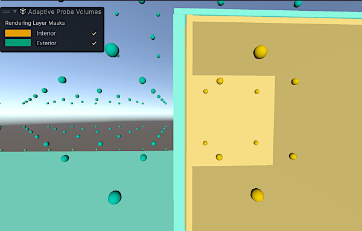

Configure APV rendering layer masks and verify probe assignments
Reduce light leaks between adjacent spaces by assigning rendering layers to renderers, enabling APV rendering layer masksA value defining which layers to include or exclude from an operation, such as rendering, collision or your own code. More info
See in Glossary, and verifying probe assignments.
Assign rendering layers to large GameObjectsThe fundamental object in Unity scenes, which can represent characters, props, scenery, cameras, waypoints, and more. A GameObject’s functionality is defined by the Components attached to it. More info
See in Glossary or to GameObjects where light leaks occur. During baking, Unity assigns a rendering layer to each probe based on the rendering layers hit by its rays.
For example, in a building where most objects use the Interior rendering layer, assign nearby probes to the Interior layer. The same applies to exterior areas. This reduces light leaks because the system samples probes based on the rendering layer you assigned.
Assign rendering layers to renderers
To assign rendering layers to your renderers:
- Select Edit > Project Settings.
- In the Tags and Layers tab, expand the Rendering layers section.
- Check existing rendering layers or create new ones.
- Select a GameObject in your sceneA Scene contains the environments and menus of your game. Think of each unique Scene file as a unique level. In each Scene, you place your environments, obstacles, and decorations, essentially designing and building your game in pieces. More info
See in Glossary. - In the GameObject InspectorA Unity window that displays information about the currently selected GameObject, asset or project settings, allowing you to inspect and edit the values. More info
See in Glossary, go to Additional Settings. - Select a rendering layer from the Rendering Layer MaskA bitmask that aggregates multiple rendering layers. By assigning one or more rendering layers to an object’s MeshRenderer or an effect such as light, decals, or APVs, you can control how and where Unity applies the effect in the scene.
See in Glossary dropdown.
This assigns a rendering layer to the GameObject’s MeshThe main graphics primitive of Unity. Meshes make up a large part of your 3D worlds. Unity supports triangulated or Quadrangulated polygon meshes. Nurbs, Nurms, Subdiv surfaces must be converted to polygons. More info
See in Glossary Renderer.
Enable rendering layer masks and rebake lighting
To enable rendering layer masks and rebake lighting:
Select Window > Rendering > Lighting > Adaptive Probe Volumes.
Set the URP asset’s Light ProbeLight probes store information about how light passes through space in your scene. A collection of light probes arranged within a given space can improve lighting on moving objects and static LOD scenery within that space. More info
See in Glossary System to Adaptive Probe Volumes.Expand the Rendering layers section.
Enable Rendering Layer Masks.
-
Add the rendering layer masks Unity must consider for APVs.
You can rename the masks you select.
You can use up to four rendering layer masks for APV. These masks define up to four zones the system uses to reduce light leaks. Each selected mask is a bitmask built with the bitwise OR operator. You can assign multiple rendering layers to each APV mask.
In the following example:
- APV uses two masks (zones) from the four available to reduce light leaks.
- APV mask 1 includes the Exterior and Upper rendering layers.
- APV mask 2 includes the Interior, Lower, and Upper rendering layers.
- A Mesh RendererA mesh component that takes the geometry from the Mesh Filter and renders it at the position defined by the object’s Transform component. More info
See in Glossary assigned only to the Exterior rendering layer primarily samples APV mask 1. - A Mesh Renderer assigned only to the Interior or Lower rendering layer primarily samples APV mask 2.
- A Mesh Renderer assigned to the Upper rendering layer samples both APV mask 1 and mask 2, because this layer belongs to both APV masks.
- A Mesh Renderer with no rendering layer assigned samples both APV mask 1 and mask 2.
Available rendering layers Mask 1 Mask 2 Interior 0 1 Exterior 1 0 Lower 0 1 Upper 1 1 Select Generate Lighting to bake lights again.
After you rebake, Unity applies the selected APV rendering layer masks and updates probe assignments.
Verify probe assignments in the Rendering Debugger
To view which layers contain light probes:
- Select Window > Analysis > Rendering Debugger > Probe Volumes.
- Select Display probes in the Probe visualization section.
- In the Probe Shading Mode dropdown, select Rendering Layer Masks.
You can view the different areas that contain light probes at bake time.

![A dark, unlit interior of a box on the right and a simple gradient sky and ground on the left. Gray probe spheres are scattered across the four areas defined by the horizontal ground line and the vertical box plane. At a sampling point for a pixel inside the box, Unity evaluates eight surrounding probes. The four lower probes are embedded in the ground, making them invalid, and Unity never samples them. Among the valid upper probes, rendering layers limit sampling to those that match the layer mask. The two upper-right probes assigned to the interior layer are selected.](../../../uploads/Main/RenderingLayersEnabled_Probes-1.jpg)
![A dark, unlit interior of a box on the right and a simple gradient sky and ground on the left. Gray probe spheres are scattered across the four areas defined by the horizontal ground line and the vertical box plane. At a sampling point for a pixel outside the box, Unity evaluates eight surrounding probes. The four lower probes are embedded in the ground, making them invalid, and Unity never samples them. Among the valid upper probes, rendering layers limit sampling to those that match the layer mask. The two upper-left probes assigned to the exterior layer are selected.](../../../uploads/Main/RenderingLayersEnabled_Probes-2.jpg)